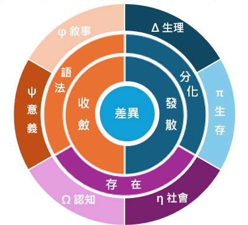

不是玩笑
「小屁」是差異被觀測後外翻出來的最小可見表面；小屁論研究它如何被觀測、投影、反投影並生成意義。

「小屁」是差異被觀測後外翻出來的最小可見表面；小屁論研究它如何被觀測、投影、反投影並生成意義。
沒有差異，就沒有相對；沒有相對，就沒有投影、判斷、交換與生成。差異是世界能被分辨和運算的最小條件。
人不是只做單一選擇，而是在生理、生存、社會、認知、敘事與意義之間，最大化某種利的組合。
Core Chain
Six Interests
身體與能量是否划算。
環境與風險是否可承受。
關係與位置是否成立。
理解成本是否降低。
時間與故事是否連續。
價值與方向是否值得。
Behavior Loop
Extended Map
差異起點、小屁圈、小小屁圈、小屁四兄弟、性利論、光屁股學，以及惡魔種子、絞殺樹、屁噗態等早期生成支線。
把 1-2-3-6、偏壓、三光譜、TOE / TOES / metaTOE 放進可推演的語意結構裡。
進入量子曲線、語意 PDE、語意場與自我函數前段背景，開始處理概念如何變形與流動。
把敘事力學、宏觀語意物理、甜甜圈與心智光刻接成 3.0 到 5.0 之間的橋。
先收成生命條件、生命型態、時間湧現與跳階，也延伸到自我函數、語法心智生命和爆音風險。
以 π、交換率、比值語法、幾何、曲率與母公理為主，往 USGI 與後續分支長出母頁。
比較像討論章與邊界整理，處理哲學含義、AI、意識研究，以及這套系統還不能說死的地方。
先放一張簡單地圖。
之後可以再長成公式索引、互動模型，或小屁論自己的圖鑑頁。